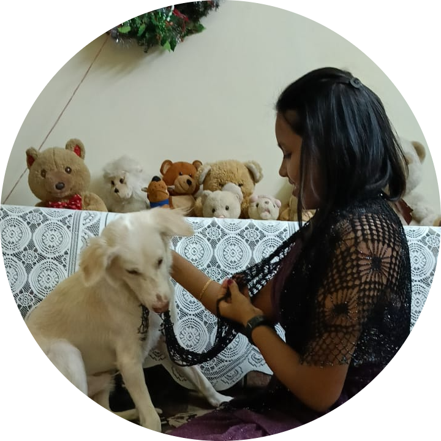

My Portfolio

HELLO! My name is Trenise Roselyn Dsouza.
I have completed my SSC (2020-2021) from St Louis Convent High School and HSC (2022-2023) from St Andrews College.
Im currently persuing BVOC- AIDS from Thakur college of Engineering and technology.
My career objectives related to Web Development include being effecient in my assigned duties and being a responsible person in an organization.
Skills
- HTML and CSS
- JAVASCRIPT
- Web design using tools such as Photoshop
- Programming languages like Python, Ruby
Projects
Two web development projects i plan to work on are :- 1) A Quiz app and 2)A social media website.
- Decide the purpose of the quiz app
- Choose the tools to create the app
- design the app
- test the app
- Publish the app
Education
I have completed my SSC (2020-2021) from St Louis Convent High School and HSC (2022-2023) from St Andrews College.
Im currently persuing BVOC- AIDS from Thakur college of Engineering and technology.
Contact
- Email: trenisedspuza255@gmail.com
- Mobile no:8433783125
- Linkedn Profile: Click here